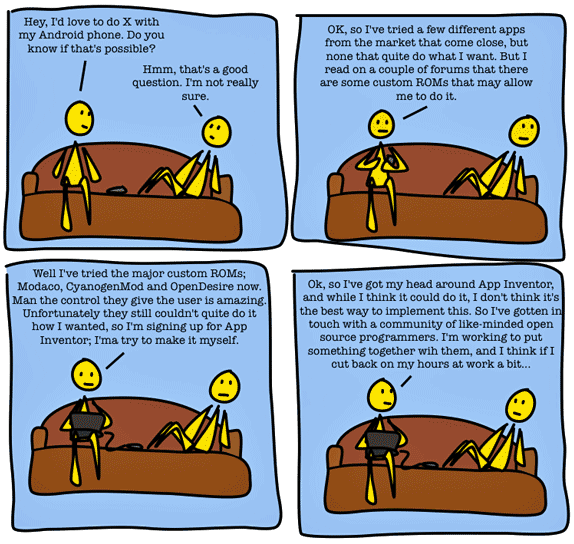
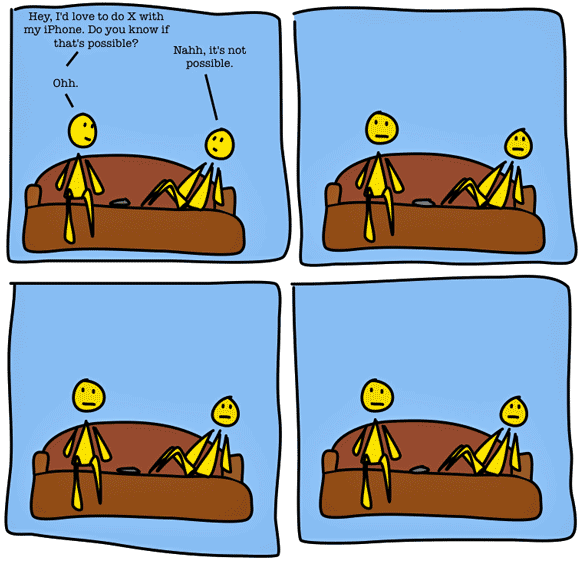

Android from source in command-line

Dobrica Pavlinušić
http://blog.rot13.org/
TOC
Compile Android from source code
Command-line usage
/system/bin
Do we need FLOSS app market?
Compile Android from source
Why is source important?
Lookup how is something implemented - and find out why usb networking doesn't work for Google apps
Lastest Android released on abandoned hardware (Froyo on G1)
Ability to install your own ROM
severly udermined by attempts to provide full signature security from hardware to userspace
SPL > recovery > system
Porting to other devices
Compile Android from source
CyanogenMod
- only for rooted phones (targets developers)
- binary blobs from phone using adb pull
- compile for your phone
dpavlin@android:/srv/cyanogen$ . build/envsetup.sh dpavlin@android:/srv/cyanogen$ lunch dpavlin@android:/srv/cyanogen$ make -j8
Compile Android from source
Android-x86
- Latest release Donut 1.6r2 works on EeePC 701, VrtualBox and kvm
- compile source
- Froyo (2.2) and Eclair (2.1) in various stages of working
- networking in kvm: boot in debug mode and in first prompt load network module:
# modprobe 8139cp
- add vga=788 to kernel line in grub to make kvm happy
- generally all drivers must be loaded before Android starts!
adb
shell
dpavlin@x200:/virtual/android$ adb shell # uname -a Linux localhost 2.6.35.4-cyanogenmod #57 PREEMPT Fri Sep 10 00:11:46 UTC 2010 armv6l GNU/Linux
logcat
Everything your Android is storing into log, multiple buffers!
dpavlin@x200:/virtual/android$ adb logcat -b events
multiple devices
dpavlin@x200:~$ export ANDROID_SERIAL=127.0.0.1:5555
Android userland
/system/bin
http://github.com/dpavlin/android-command-lineDump debugging informations
dumpstate
Big and verbose state of your device
dpavlin@x200:~$ adb shell dumpstate > dumpstate.txt
dumpsys
Who is listening to those intents?
dpavlin@x200:~$ adb shell dumpsys > dumpsys.txt
service
Make phone calls from command line
# service call phone 2 s16 "+31611530555"
Where did 2 came from? com.android.internal.telephony.ITelephony.Stub
Rotate screen in emulator
$ service call window 18 i32 1 # landscape $ service call window 18 i32 0 # portrait
am
Browser
# am start -a android.intent.action.MAIN -n com.android.browser/.BrowserActivity
Settings
# am start -a android.intent.action.MAIN -n com.android.settings/.Settings
Send intent broadcasts
From manifest <receiver> ... <intent-filter> tags
# am broadcast –a NotifyServiceStart # am broadcast –a NotifyServiceStop
pm
Install application from phone to other device
dpavlin@x200:~$ adb shell pm list packages | grep replica
package:com.replica.replicaisland
dpavlin@x200:~$ adb shell pm path com.replica.replicaisland
package:/mnt/asec/com.replica.replicaisland-1/pkg.apk
dpavlin@x200:~$ adb pull /mnt/asec/com.replica.replicaisland-1/pkg.apk
1373 KB/s (5144485 bytes in 3.658s)
dpavlin@x200:~$ ANDROID_SERIAL=192.168.1.32:5555 adb install pkg.apk
779 KB/s (5144485 bytes in 6.446s)
pkg: /data/local/tmp/pkg.apk
Success
procrank
show memory usage
# procrank PID Vss Rss Pss Uss cmdline 142 37328K 27332K 16926K 15472K system_server 218 17568K 17564K 7469K 6228K com.android.phone 220 16040K 16040K 5694K 4380K org.zeam.core 1783 18276K 15880K 5308K 3836K com.android.term 298 15172K 15164K 4905K 3636K com.android.mms 1693 14860K 14860K 4200K 2724K com.android.music 441 13260K 13260K 3752K 2616K com.als.usagetimelines 209 13052K 13052K 3329K 2188K com.access_company.graffiti 1700 13300K 13300K 3242K 1904K android.process.media 107 11860K 11860K 2118K 900K zygote 108 768K 768K 342K 300K /system/bin/mediaserver 1826 488K 484K 296K 280K procrank
So, is Android command-line useful?
- get insight into your phone
- automate operations
- testing, QA
- real man don't click!
Do we need FLOSS app market?
Jonathan Corbet of LWM fame think we do and I agree.
Working idea
- FLOSS licence
- source code repository (git)
- all source searchable (gitweb?)
- automatic builds (x86 NDK?)
- download links from web!
- backup apps to cloud (CouchDB?)
Anybody interested in something like that?
The Difference Between Android And iPhone
Android
iPhone
Questions? Comments?
More information
this presentation: http://dpavlin.github.com/android-command-line/
repository: http://github.com/dpavlin/android-command-line/
Slides template
Click here, Press → key to advance.
Attached Events
- [arrow keys] to go next and previous
- [mouse scroll wheel] to go next and previous
- [Ctrl or Command] + [+/-] to zoom in and out
- [touch gestures] for mobile devices